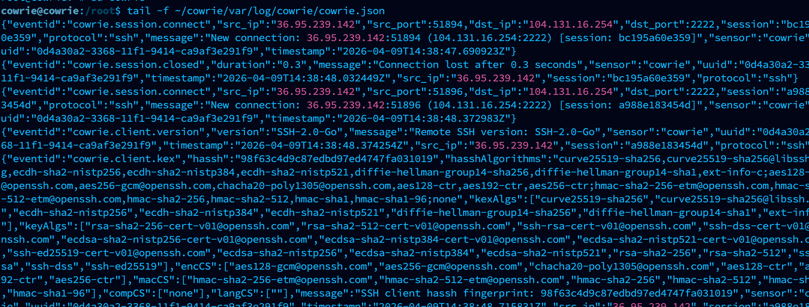

01 / Introduction
Watching an exposed SSH service
I deployed Cowrie on a DigitalOcean VPS to observe what reached a public SSH endpoint when there was no real production service behind it.
Cowrie presented an instrumented SSH environment and preserved the resulting connection, authentication, command, and session events. The deployment began receiving traffic within minutes. Most of it looked like automated credential testing: short connections, reused username-and-password pairs, and very little activity after authentication.
A smaller set behaved differently. Those sessions continued past authentication, altered the simulated .ssh directory, and wrote the same public key into authorized_keys. The repetition turned isolated events into a cluster that could be compared across source addresses.


02 / Dataset
Seventeen hours, four useful pivots
The analyzed window ran from 00:07:44 through 17:12:36 UTC on March 23, 2026. The raw cowrie.txt record contained 60 unique source IP addresses and 76 accepted root authentication events. Those counts describe the honeypot’s simulated service, not access to the host operating system.
60 source addresses
Most produced brief, automated activity consistent with broad internet scanning and credential spraying.
76 accepted authentication events
Cowrie admitted selected credentials so post-authentication commands and persistence attempts could be recorded.
28 key-injection attempts
Multiple sessions executed the same sequence and wrote the same RSA public key, creating a strong behavioral link.
One secondary credential pivot
The same unusual password appeared across multiple source addresses after initial access, suggesting shared tooling or campaign coordination.
03 / Session clustering
Two broad patterns emerged
Volume alone did not separate the interesting sessions. Post-authentication behavior did.
- Credential scannersHigh session counts, Go or libssh client strings, repeated username-and-password combinations, and little or no activity after authentication.
- Reconnaissance sessionsShort command sequences such as
echo $SHELL,history,ls -la, and directory navigation that resembled lightweight environment inspection. - Persistence operatorsA repeatable script removed protections from
.ssh, recreated the directory, appended a shared key, and restricted its permissions. - Forwarding probeOne source requested
direct-tcpipconnections to Google-routed addresses andgoogle.comon port 443. Cowrie recorded the attempts as refused; the logs show the requests, not their intended purpose.
That last distinction matters. A forwarding request could be a proxy test, an egress check, or part of another automated routine. Without a completed connection or payload, calling it command-and-control or exfiltration would go beyond the evidence.
04 / Repeated behavior
The shared key was the clearest campaign marker
The most distinctive sessions executed the same basic sequence: clear immutable and append-only attributes from the SSH directory, rebuild it, append an attacker-controlled RSA key to authorized_keys, and remove group and other permissions. The public key ended with the comment mdrfckr.
chattr -ia .ssh
rm -rf .ssh && mkdir .ssh
echo "ssh-rsa AAAA… mdrfckr" >> .ssh/authorized_keys
chmod -R go= ~/.sshThe redirected key content had the SHA-256 value a8460f446be540410004b1a8db4083773. The identical key, command order, and secondary credential form a stronger cluster than geography or source IP alone.
05 / Method
AI-assisted triage, evidence-led conclusions
I analyzed the raw cowrie.txt output with Claude Code and a custom forensic prompt. The workflow grouped events by session and source address, extracted authentication attempts and commands, identified repeated values, and produced a first-pass timeline and IOC register.
The useful part of that automation was compression: thousands of event lines became a smaller set of pivots that could be checked against the source log. Session IDs, timestamps, client fingerprints, the repeated password, the public-key hash, and the exact command sequence remained the evidence. Labels such as “scanner,” “persistence operator,” or “proxy probe” were analytical interpretations layered on top.
This distinction also limits false certainty. The report can demonstrate that 28 sessions attempted the same key installation; it cannot infer a human operator, malware family, or monetization goal from a key comment alone.
06 / Defensive value
What the capture says about SSH defense
The speed and uniformity of the activity show why a public SSH service should be assumed discoverable. The credential list included empty passwords, keyboard walks, vendor names, year-based variants, and common defaults. None was tailored to this VPS; automation made trying them inexpensive.
Remove password authentication
Use key-based access and disable direct root login so commodity credential lists cannot open an administrative session.
Reduce exposure
Restrict management SSH with a cloud firewall, trusted source ranges, or a private access path instead of presenting it to the entire internet.
Monitor durable pivots
Alert on changes to
authorized_keys, unexpectedchattractivity, repeated shared credentials, and unusual SSH forwarding requests.Separate clustering from attribution
Use repeated keys, command templates, credentials, and client fingerprints to group activity, while keeping identity and intent as unresolved questions.
Cowrie’s documentation identifies its logs as the record of login attempts, accepted authentications, and commands executed in connected sessions. DigitalOcean’s guidance separately recommends SSH keys and cloud-firewall restrictions for Droplet management. Those controls address the same two conditions this dataset exposed: guessable credentials and unrestricted reachability.
07 / Source record
Full forensic report
The complete machine-assisted report preserves the event window, attacker-by-attacker session notes, timeline, observed commands, credential pivots, public-key IOC, SSH client fingerprints, and assessment. IP addresses and credentials are retained as defensive indicators from the honeypot dataset; they are historical observations, not permanent attribution.
Read the complete Cowrie forensic analysisCowrie documentationDigitalOcean security guidancePublished SSH-key research